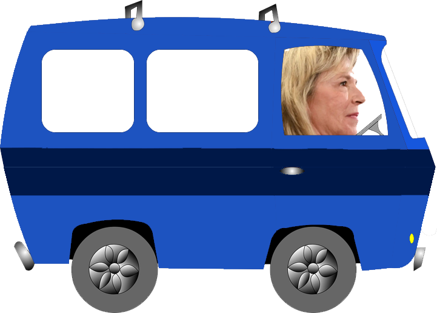

MARTINE DANS LE TRAFFIC
LE jeu
La construction du troisième lien cumule des retards. Ces retards sont si importants que de multiples circuits de tramway ont pu être implantés un peu partout à Québec pendant tout ce temps. Aidez Martine à se rendre au parlement à bord de son VUS tout en évitant les tramways.
Si vous êtes sur cellulaire, veuillez le mettre à l'horizontale.
COMMENCER